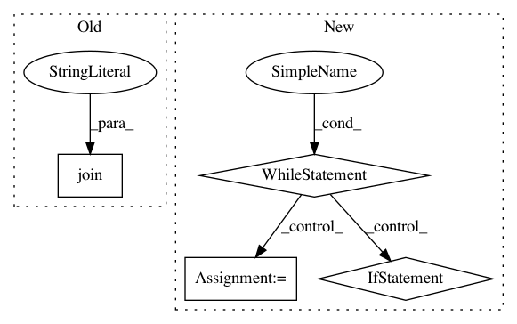

66ee118a455c5e267566f0e3fdc482985f803df0,ci/build_windows.py,,windows_build,#Any#,139
Before Change
os.chdir(path)
cmd = "\"{}\" && {} -G \"NMake Makefiles JOM\" {} {}".format(
args.vcvars,
os.path.join(tmpdir, "cmake-3.16.1-win64-x64", "bin", "cmake.exe"),
CMAKE_FLAGS[args.flavour], mxnet_root)
logging.info("Generating project with CMake:\n{}".format(cmd))
check_call(cmd, shell=True)
After Change
MAXIMUM_TRY = 5
build_try = 0
while build_try < MAXIMUM_TRY:
if os.path.exists(path):
shutil.rmtree(path)
os.makedirs(path, exist_ok=True)
mxnet_root = get_mxnet_root()
logging.info("Found MXNet root: {}".format(mxnet_root))
with remember_cwd():
os.chdir(path)
cmd = "\"{}\" && cmake -GNinja {} {}".format(args.vcvars,
CMAKE_FLAGS[args.flavour],
mxnet_root)
logging.info("Generating project with CMake:\n{}".format(cmd))
check_call(cmd, shell=True)
cmd = "\"{}\" && ninja".format(args.vcvars)
logging.info("Building:\n{}".format(cmd))
t0 = int(time.time())
ret = call(cmd, shell=True)
if ret != 0:
build_try += 1
logging.info("{} build(s) have failed".format(build_try))
else:
logging.info("Build flavour: {} complete in directory: \"{}\"".format(args.flavour, os.path.abspath(path)))
logging.info("Build took {}".format(datetime.timedelta(seconds=int(time.time() - t0))))
break
windows_package(args)
def windows_package(args):
In pattern: SUPERPATTERN
Frequency: 3
Non-data size: 4
Instances
Project Name: apache/incubator-mxnet
Commit Name: 66ee118a455c5e267566f0e3fdc482985f803df0
Time: 2020-04-03
Author: lausen@amazon.com
File Name: ci/build_windows.py
Class Name:
Method Name: windows_build
Project Name: andresriancho/w3af
Commit Name: b3a3491f866a353fd2de125a8fcb2b8d6628d908
Time: 2014-06-03
Author: andres.riancho@gmail.com
File Name: lib/takeover/metasploit.py
Class Name: Metasploit
Method Name: _initVars
Project Name: tensorflow/minigo
Commit Name: fb623b16ca3eeee932d5552c2332ddf5c766277e
Time: 2019-10-07
Author: jacksona@google.com
File Name: validate.py
Class Name:
Method Name: main